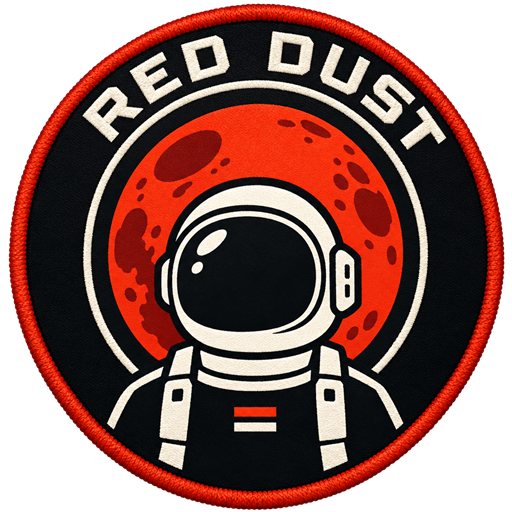
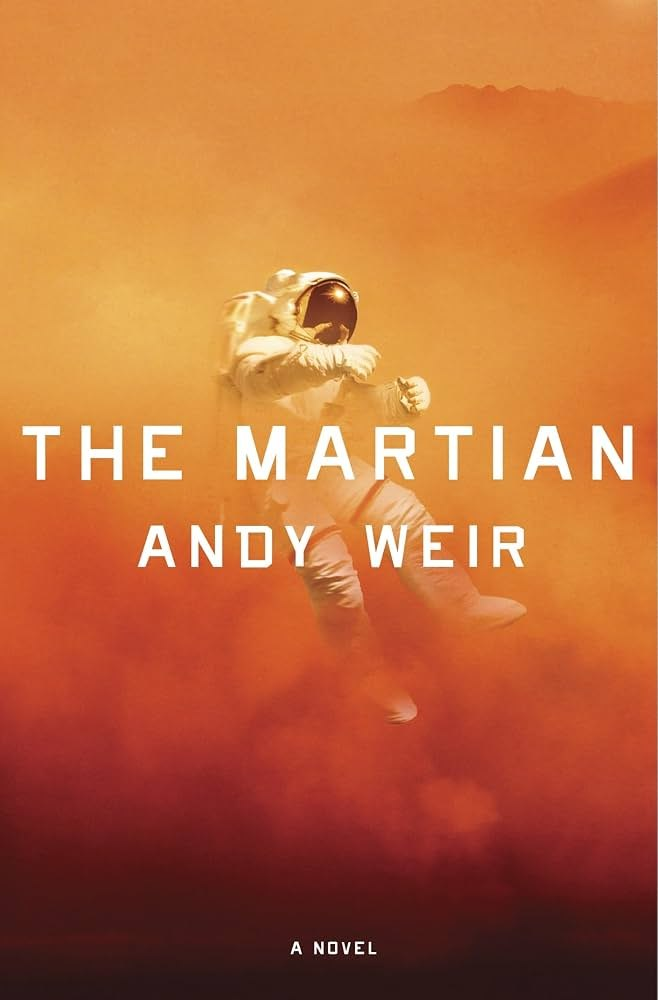
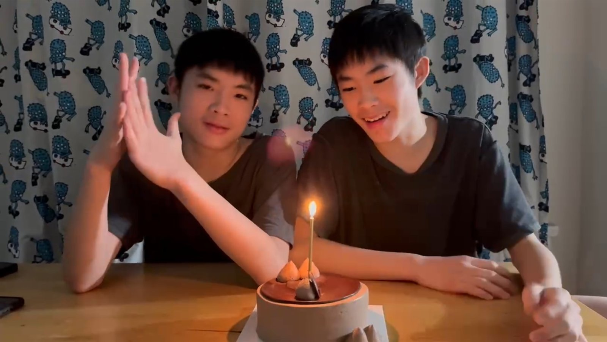

Descent
- WASD
- manoeuvre over the surface; the arrow keys work too
- Space/Shift
- descent thrusters, up and down
Centre over the green pad. Watch the fuel.

RED DUSTLoadingA game based on the story of The Martian by Andy Weir. You are the one they left behind, and everything on this planet is trying to kill you slowly.

Andy Weir wrote The Martian a chapter at a time on his own website, put it on the Kindle store for ninety-nine cents, and watched it climb the charts until Crown published it properly in 2014. Ridley Scott's film followed in 2015, with Matt Damon as Mark Watney. The joke of the book is that it is a survival story told as a series of engineering problems, and the joke lands.
The story: a dust storm forces the Ares 3 crew to abort, Watney is hit by debris in the scramble and left for dead, and he wakes up alone with a habitat rated for thirty days, a crate of potatoes and the next ship four years out. He farms. He digs up an old Pathfinder probe to talk to Earth. He drives across half the planet to a rocket that was meant for someone else, strips it down to the frame, and launches into a rendezvous that should not work.
Red Dust keeps that shape — the hab, the potatoes, the long drive, the stripped rocket, the reach across empty space — and invents its own moments around it: the crossing to the colony, the argument in Houston, and Hayes coming out to get you.
Cover: Crown Publishing, 2014 · Photo of Andy Weir: Gage Skidmore, CC BY-SA 3.0, cropped.
A dust storm forces the crew off Mars. In the scramble one of them is hit by debris and lost — and the ship leaves without a body to bring home.
He isn't dead. He has a habitat built for thirty days, a rover with no comms, a crate of potatoes, and the next ship is four years out. Red Dust is that story, played rather than watched: the crash, the farm, the drive, the failed resupply, the argument in Houston, and the launch that finally gets him off the ground.
Press play for the title sequence. It runs on the same canvas the game does.
The game opens in its own tab and takes the whole window. Press ◀ WEBSITE under the title on the game's menu whenever you want to come back here.
Keyboard and mouse needed. Red Dust has no touch controls yet — open this page on a computer to play.
A sol is a Martian day — twenty-four hours and thirty-nine minutes. This is the whole run, in order, with a few seconds of real play under each chapter if you would rather watch than play.
The thrusters are failing on the way down. Ease her through the thin air onto the pad and settle slow and level. A hard landing is the end of the story on the first page.
The wreck is not where the base is. Six hundred metres of canyon, mesa and open plain on foot, on a tank of oxygen that is already going down, with a chasm in the middle that the parkour is the only way over.
Thirty days of food and four years to the next ship. Dig regolith, carry it in through the airlock, water it, and plant the only thing on the planet that will grow: potatoes. Then keep the hab alive around them.
The comms tower is out past the gate line. Repair the rover, then race the gates against the clock — boost pads, ramps, nitro — to get an antenna up and a signal out. Then race them back.
The signal lands. You are on the other side of it now, in a supply station that has to build a resupply rocket in a hurry — and watch it come apart on ascent, live, at T+02:14.
There is no budget and no booster for another try. There is a plan that could bring him home, and one Administrator who has to be talked into it. Choose your words.
A second rocket, built and kept green for two minutes straight while its systems fault one after another. Run to the red station. Hold it together.
The rescue ship threads the belt on the way out: steer, fire, dodge. Hull is the only resource, and Mars is a growing dot at the end of it.
Touchdown, and the same canyon from the other direction — from the hab you left, to the ship that has come for you, with someone waving from beside it.
She is too heavy to make orbit. Sit in the couch and throw out everything that is not holding the ship together or keeping you alive — the window, the water, the spare seats — until the numbers close.
Sixteen seconds from the pilot's couch: the count, the hold-down, max-Q with the canvas you taped over the window thundering, staging, and then the engine cuts and everything loose in the cabin rises.
Blow the hatch. Tumble. Kill the spin. A light out by the shuttle turns out to be a person on a manoeuvring unit, and Hayes clips a tether to your chest. Then the two of you fly to the lit doorway together.
Every phase uses the same handful of keys. The keyboard drawn here shows the ones the game ever asks for; rest on a card below and it lights that phase's keys. Settings, on the pause menu or the title screen, rebinds any of them and sets the volume and the mouse.
Centre over the green pad. Watch the fuel.
Run at a wall to wall-run.
The suit locker is inside. Suits you find on the plain go there.
Drive over a lit pad for a burst.
Hull is all you have. Shoot or dodge.
Too heavy and it will not make orbit. Too light and it will not fly straight.
Each one pops up in the corner the moment you earn it, and stays earned on this browser. Locked ones keep their names but hide how to get them until you do.
Each one is the object exactly as the game builds it, turning in its own small view; drag any of them round. The astronaut tries on all twelve suits in turn; tap it for the next. Standard issue is yours from the start, and the other eleven are sealed in capsules out on the plain and up on the parkour mesas, waiting to be found.
The whole game is a single HTML page: about fifteen thousand lines of JavaScript on Three.js r128, plus seventeen baked 3D models in a folder beside it. Everything else — the rover, the canyon, the consoles — is built in code from boxes, cylinders and noise.
The light is real, the music and sound effects were generated with AI, and every screen is painted onto a canvas as the page loads. Twelve phases, each its own little machine, and six tools to build them:
![]() MeshyMeshy AI turned pictures into 3D models: the astronaut, the hab, the crew, the potato plants and more.
MeshyMeshy AI turned pictures into 3D models: the astronaut, the hab, the crew, the potato plants and more.![]() HiggsfieldHiggsfield AI made the sound: a music loop for every place, the Martian wind, the hum of the hab, the thrusters, explosions and every clunk in between — and the voices in the trailer, the narrator and the crew.
HiggsfieldHiggsfield AI made the sound: a music loop for every place, the Martian wind, the hum of the hab, the thrusters, explosions and every clunk in between — and the voices in the trailer, the narrator and the crew.The editors are two eighth graders in New York City who read The Martian, decided the launch should feel like it does in the book, and ended up building the rest of the year around it — the farm, the rover, the argument in Houston, the cutting of the trailer. Everything on this page went through their hands more than once.
Helldivers and Warhammer 40,000 on one side of the desk, Persona 5 and Titanfall 2 on the other. Some of that shows here: the radio chatter in the EVA, the checklist clipped to the console, the fondness for a plan that is already going wrong.

Marc cuts the picture and writes most of the code — the rover's dust, the round porthole, the suits that tumble down this page. Helldivers for the co-op chaos and the friendly fire; Warhammer 40,000 for the lore, explained at length whether or not you asked.
Mike cuts the trailer and keeps the story straight — which shot goes where, what the radio says, where the title lands. Persona 5 for the calendar of a year going sideways; Titanfall 2 for the movement and the one campaign everyone agrees on.
A third of Earth's. It is why the parkour jumps hang the way they do, why the rover leaves the ground off every ramp, and why the dust it kicks up takes so long to come down.
Of Earth's surface pressure. The launch is through it in seconds, so max-Q comes early and the sky goes black fast. It is also why you never take the helmet off.
Nobody in Houston can talk you through anything. Mission control is its own phase you play, not a voice in your ear — and the crew who come for you make their own calls.
Long enough that the whole run — crash to rendezvous — is five hundred and sixty-one of them. The farm is what makes the middle five hundred survivable.
The gravity, pressure and day length are NASA's figures from its Mars fact sheet; the radio delay is the light time across the Earth–Mars distance, and the sol count is the film's. The insignia is NASA's, reproduced here to credit the data, not to suggest NASA had anything to do with the game.
No run on record yet. Your best score is kept in this browser and shown here.
Your descent thrusters are failing. Ease the lander down through the thin Martian atmosphere and touch the surface without exploding — a soft landing keeps her intact, a hard one is fatal.
Then abandon the wreck and cross the surface on foot to reach the old colony base before your oxygen runs out.